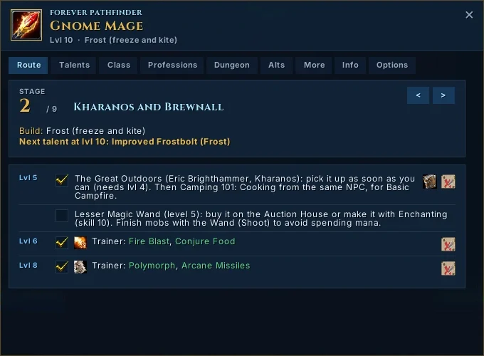
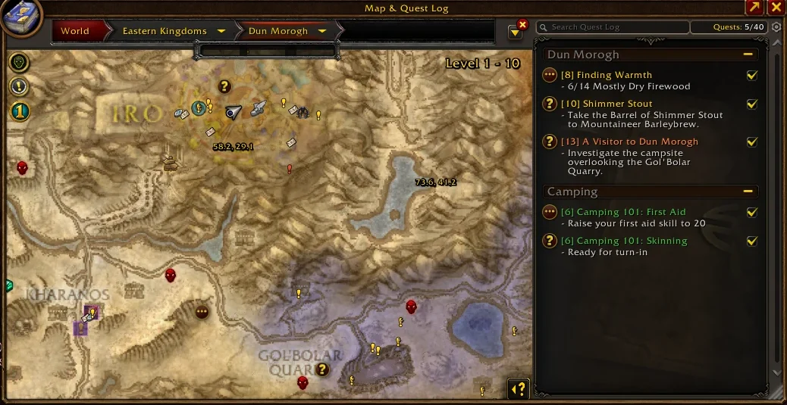
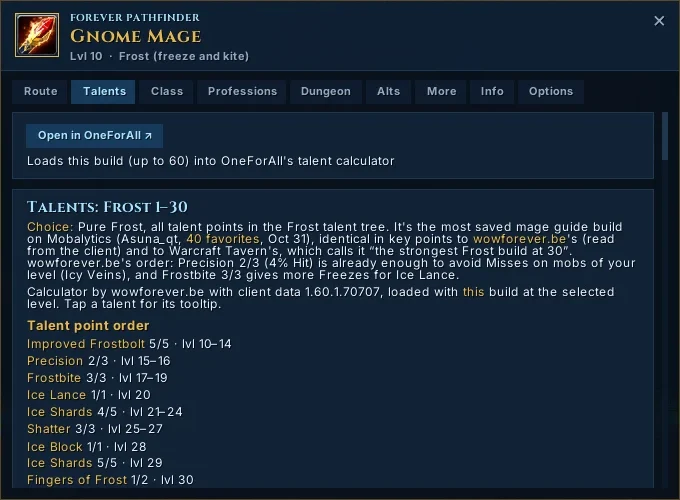
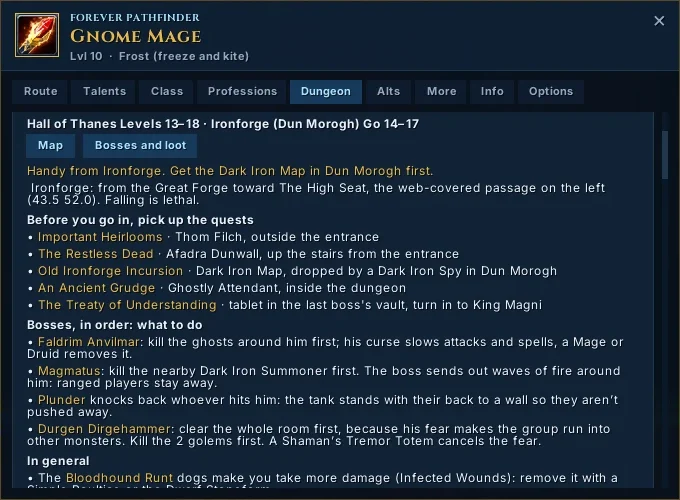
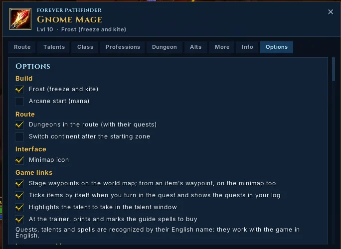
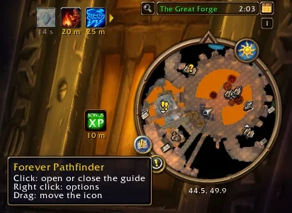

Cosa fa






Screenshot dal gioco vero, WoW: Forever (Gnome Mage al livello 10, addon in inglese).
- Icona sulla minimappa, come gli altri addon: clic apre la guida, clic destro le opzioni, si trascina lungo il bordo.
- Tutte le schede del sito in una finestra nera e minimale, con le schede in una colonna a sinistra: Percorso, Talent, Dungeon, Profession, Classe, Alt, Altro, Info. Riconosce da solo razza, classe e livello.
- Percorso: la prossima cosa da fare in grande, con i pulsanti Mostra sulla mappa, Questie e Fatto; poi le altre voci della tappa su una riga ciascuna (un clic apre il dettaglio), salvate per ogni personaggio, il talento da prendere, i dungeon adatti al tuo livello e le zone consigliate: quelle con più quest per la tua razza e il tuo livello, con il pulsante mappa (si spengono dalle Opzioni).
- Mappa e minimappa: aprendo la mappa del mondo vedi i segnaposti della tappa, con un’icona per tipo e un bordo viola per distinguerli da Questie: classe per il trainer, grifone o viverna per il Flight Master, «!» o «?» per le quest, teschio per i dungeon; sopra un NPC leggi il suo nome e le quest che dà o ritira. Il pulsante con la mappa accanto a una voce apre la mappa sulla zona giusta con il segnaposto scelto ben visibile (bordo dorato che pulsa, NPC e quest sotto), mette la freccia del gioco e scrive in chat zona e coordinate; all’arrivo si toglie da solo.
- Quest, con Questie: accanto alle voci vedi «nel registro» o «da consegnare»; la voce si spunta da sola quando consegni la quest, e anche per le quest fatte prima di installare l’addon. Il pulsante mappa di una voce con quest porta il segnaposto sul punto esatto, dal database di Questie: chi la dà o, se è nel registro, l’obiettivo o la consegna più vicina; il libro apre la sua scheda nel Journey di Questie.
- Talenti: nella finestra dei talenti del gioco (anche quella nuova di Forever) il talento da prendere ha un bordo luminoso; con OneForAll, nella scheda Talent «Apri in OneForAll» carica tutta la build nel suo calcolatore.
- Dungeon: il menu mette in cima i dungeon adatti al tuo livello, con le quest che hai già; la scheda di un dungeon ha le sezioni Quest, Boss e Come arrivarci, e ogni quest con una catena mostra tutti i passi numerati, con quello a cui sei e il pulsante mappa. «Mappa» apre la mappa del mondo sull’ingresso con il segnaposto (con MapUtils un clic sull’icona d’ingresso apre la mappa interna); con OneForAll «Boss e loot» apre il dungeon nella sua scheda.
- Profession: legge dal gioco le profession che hai e la tua skill e mostra il percorso fino a 300 con il passo in cui sei: cosa craftare o raccogliere, quante volte, i materiali con quanti ne hai nelle borse, il trainer più vicino per ogni grado; con OneForAll un clic apre la ricetta. Al massimo del grado una riga in chat ti ricorda di impararne uno nuovo. Facoltativo: tutti i trainer e i reagent vendor delle tue profession sulla mappa del mondo.
- Trainer: appena lo apri, scrive in chat gli spell della guida da comprare e li segna nell’elenco. Nella guida gli spell che conosci già sono in verde e la voce si spunta da sola quando li hai tutti.
- Opzioni nel gioco: build, dungeon sì o no, cambio di continente, icona e ogni collegamento col gioco da accendere o spegnere.
- Inglese, italiano, spagnolo o francese, a scelta nelle Opzioni o con /fp lang (di base la lingua del gioco se è spagnolo o francese, altrimenti inglese). In italiano i nomi di quest, NPC, spell e oggetti restano in inglese, come sul sito; in spagnolo e francese quest, NPC, oggetti e zone hanno i nomi del client del gioco, spell e talenti restano in inglese.
Quest, talenti e spell si riconoscono dal nome inglese: questi collegamenti funzionano con il gioco in inglese. Per la mappa interattiva e i calcolatori tieni aperto il sito sul telefono.
Installazione
Con l’app CurseForge (il modo più semplice): scegli la versione WoW Forever, cerca Forever Pathfinder e installalo: Questie arriva insieme e gli aggiornamenti si scaricano da soli. Altrimenti, a mano:
- Serve Questie (versione per WoW: Forever, da CurseForge): senza Questie l’addon non si carica. OneForAll e MapUtils sono facoltativi: se ci sono, compaiono i loro pulsanti.
- Scarica ForeverPathfinder.zip ed estrailo (tasto destro → Estrai tutto). Ottieni la cartella
ForeverPathfindercon dentroForeverPathfinder.toc,Core.lua,Data.lua,icon.tgae la cartellaFonts. - Trova la cartella del gioco. Nell’app Battle.net seleziona WoW: Forever, tocca l’ingranaggio ⚙ accanto a «Gioca» → Mostra in Esplora risorse (su Mac: Mostra nel Finder). Di solito è
C:\Program Files (x86)\World of Warcraft\_forever_\. - Copia la cartella
ForeverPathfinderdentroInterface\AddOnsdi quella sottocartella. SeInterfaceoAddOnsnon esistono, creale tu. Alla fine deve esserci:…\World of Warcraft\_forever_\Interface\AddOns\ForeverPathfinder\ForeverPathfinder.toc
Attento a non avere una cartella dentro l’altra (ForeverPathfinder\ForeverPathfinder\…): succede spesso estraendo lo zip. - Avvia il gioco (se era aperto, chiudilo e riaprilo del tutto). Nella schermata dei personaggi tocca AddOns in basso a sinistra e controlla che Forever Pathfinder sia spuntato. Se risulta «non aggiornato», spunta Carica AddOn non aggiornati in alto.
Primo avvio e setup
- Entra con il personaggio: in chat compare «Forever Pathfinder caricato: clic sull’icona della minimappa o /fp per aprire la guida.»
- Clic sull’icona sul bordo della minimappa (o scrivi /fp): si apre la guida sul Percorso, alla tappa del tuo livello. Trascinala dove non ti dà fastidio.
- Controlla la testata: deve dire la tua razza, classe e livello. Se c’è scritto «Razza o classe non riconosciute», impostale a mano con /fp set razza-classe (vedi sotto).
- Apri Opzioni (o clic destro sull’icona) e scegli build, dungeon e cambio di continente come sul sito.
- Mentre giochi, spunta le voci fatte; le quest consegnate si spuntano da sole. Per chiudere: ×, Esc o di nuovo l’icona.
Comandi
| Comando | Cosa fa |
|---|---|
| /fp | Apre o chiude la guida, come il clic sull’icona della minimappa. Uguale: /pathfinder. |
| /fp opzioni | Apre le Opzioni. Uguale: /fp options. |
| /fp set razza-classe | Sceglie a mano il percorso, se il riconoscimento automatico sbaglia. Esempio: /fp set skyborne_h-druid. Vale solo per quel personaggio. |
| /fp auto | Torna al riconoscimento automatico di razza e classe. |
| /fp list | Scrive in chat tutte le combinazioni razza-classe disponibili. |
| /fp dungeon | Scrive in chat i dungeon consigliati al tuo livello: giudizio, ingresso e quest da prendere prima (anche di classe). |
| /fp cerca parola | Cerca in tutta la guida (es. /fp cerca sentinel hill): scrive le prime voci in chat e apre il Percorso sulla tappa della prima. Uguale: /fp find. |
| /fp bug | Apre un riquadro col link della pagina per segnalare un errore (senza registrarti), già selezionato: copialo con Ctrl+C e aprilo nel browser. Lo stesso riquadro si apre con «Segnala un errore», nella colonna delle schede sopra Opzioni. |
| /fp debug | Scrive in chat versione, razza e classe come le vede il gioco, guida riconosciuta, talenti, salvataggi e collegamenti col gioco (continenti, segnaposto, finestra dei talenti, quest nel registro). Se qualcosa non va, mandaci uno screenshot di queste righe dal link in fondo alla pagina. |
| /fp lang | Torna alla lingua di prima; /fp lang it, en, es o fr ne sceglie una. |
| /fp help | Riassunto dei comandi in chat. |
Nella finestra
| Schede | In alto, come sul sito: Percorso, Talent, Classe, Profession, Dungeon, Alt, Altro, Info, Opzioni. |
| < > | Nel Percorso: tappa precedente / successiva. |
| Casella | Spunta la voce come fatta; resta salvata per quel personaggio. |
| Mappa | Il pulsante a destra di una voce: segnaposto su mappa e minimappa, zona e coordinate in chat. |
| × o Esc | Chiude la finestra. |
| Rotella | Scorre la scheda. |
Combinazioni per /fp set
Scrivi la combinazione esattamente così (minuscolo, trattino in mezzo). Skyborne: skyborne_a per l’Alleanza, skyborne_h per l’Orda.
Problemi comuni
Non compare nella lista degli AddOns
La cartella è nel posto sbagliato o è doppia. Deve esserci il file Interface\AddOns\ForeverPathfinder\ForeverPathfinder.toc dentro la cartella di Forever (non di Retail o Classic Era). Poi chiudi e riapri il gioco del tutto.
È nella lista ma in rosso, «dipendenza mancante»
Manca Questie (o è spento): installalo dalla sua pagina di CurseForge, versione per WoW: Forever, e spuntalo nella lista degli AddOns.
Risulta «non aggiornato» (out of date)
Nella schermata AddOns spunta Carica AddOn non aggiornati. Succede quando Blizzard aggiorna il gioco prima di noi; pubblicheremo una versione aggiornata.
«Razza o classe non riconosciute»
Capita soprattutto con gli Skyborne, il cui nome interno lo vedremo solo al lancio. Usa /fp set con la tua combinazione (es. /fp set skyborne_a-mage) e segnalacelo con uno screenshot di /fp debug.
Il talento indicato non è quello che ho preso
L’addon segue l’ordine della build scelta nelle Opzioni e conta i punti già spesi. Se hai messo punti altrove, da lì in poi i consigli scorrono di conseguenza: conta il numero di punti, non quali hai preso. Per un’altra build cambiala nelle Opzioni.
Segnaposti, quest, talenti o trainer non funzionano
Si riconoscono dal nome inglese di quest, talenti e spell: servono il gioco in inglese e il collegamento acceso nelle Opzioni. Se ancora non va, mandaci uno screenshot di /fp debug: l’ultima riga dice cosa vede l’addon.
Le spunte spariscono dopo il riavvio
Nella beta di Forever c’era un bug: il gioco non rileggeva i dati salvati degli addon. Dovrebbe essere risolto al lancio; se succede ancora, segnalacelo: in /fp debug «caricamenti 1» anche dopo un /reload lo conferma.
Aggiornare e disinstallare
Aggiornare: scarica di nuovo lo zip da questa pagina e sostituisci la cartella ForeverPathfinder con quella nuova, a gioco chiuso. Le spunte restano: il gioco le salva a parte, nella cartella WTF.
Disinstallare: elimina la cartella Interface\AddOns\ForeverPathfinder.
Hai trovato un errore o hai un’idea? Segnalalo qui, senza registrarti. Progetto personale gratuito, non affiliato a Blizzard Entertainment. World of Warcraft © Blizzard Entertainment.
What it does
Screenshots from the real game, WoW: Forever (Gnome Mage at level 10, addon in English).
- Minimap icon, like other addons: click opens the guide, right click the options, drag it along the edge.
- Every tab of the website in one black, minimal window, with the tabs in a column on the left: Route, Talents, Dungeon, Professions, Class, Alts, More, Info. It detects race, class and level by itself.
- Route: the next thing to do in large type, with Show on the map, Questie and Done buttons; then the stage's other items on one line each (a click opens the details), saved per character, the talent to take and the dungeons for your level, and the recommended zones: the ones with the most quests for your race and level, with a map button (turn them off in the Options).
- Map and minimap: open the world map to see the stage waypoints, with one icon per kind and a purple border to tell them from Questie’s: class icon for trainers, gryphon or wyvern for Flight Masters, “!” or “?” for quests, a skull for dungeons; hover an NPC to read its name and the quests it gives or takes. The map button next to an item opens the map on the right zone with the chosen waypoint easy to spot (pulsing golden border, NPC and quest below), sets the game’s arrow and prints zone and coordinates in chat; it clears itself when you arrive.
- Quests, with Questie: next to the items you see “in your log” or “ready to turn in”; the item ticks itself when you turn in the quest, and also for quests done before you installed the addon. The map button of an item with a quest takes the waypoint to the exact spot, from Questie’s database: who gives it or, if it is in your log, the nearest objective or turn-in; the book opens its details in Questie’s Journey.
- Talents: in the game’s talent window (Forever’s new one too) the talent to take has a glowing border; with OneForAll, “Open in OneForAll” in the Talents tab loads the whole build into its calculator.
- Dungeons: the menu puts the dungeons right for your level on top, with the quests you already have; a dungeon’s page has the sections Quests, Bosses and How to get there, and every quest with a chain shows all its steps numbered, with the one you are on and its map button. “Map” opens the world map on the entrance with the waypoint (with MapUtils a click on its entrance icon opens the dungeon’s own map); with OneForAll “Bosses and loot” opens the dungeon in its tab.
- Professions: reads your professions and skill from the game and shows the route up to 300 with the step you are on: what to craft or gather, how many times, the materials with how many you have in your bags, the nearest trainer for each rank; with OneForAll one click opens the recipe. At the rank cap a chat line reminds you to learn the next one. Optional: all trainers and reagent vendors for your professions on the world map.
- Trainer: as soon as you open it, it prints in chat the guide spells to buy and marks them in the list. In the guide the spells you already know are green, and the item ticks itself once you have them all.
- Options in game: build, dungeons on or off, continent switch, icon and every game link to turn on or off.
- English, Italian, Spanish or French, your choice in the Options or with /fp lang (by default the game’s language if it is Spanish or French, English otherwise). In Italian the names of quests, NPCs, spells and items stay in English, as on the website; in Spanish and French quests, NPCs, items and zones have the game client’s names, while spells and talents stay in English.
Quests, talents and spells are recognized by their English name: these links work with the game in English. For the interactive map and the calculators keep the website open on your phone.
Installation
With the CurseForge app (the easiest way): pick the WoW Forever version, search for Forever Pathfinder and install it: Questie comes with it and updates download by themselves. Otherwise, by hand:
- You need Questie (the WoW: Forever version, from CurseForge): without Questie the addon does not load. OneForAll and MapUtils are optional: if they are there, their buttons appear.
- Download ForeverPathfinder.zip and extract it (right click → Extract All). You get the
ForeverPathfinderfolder withForeverPathfinder.toc,Core.lua,Data.lua,icon.tgaand theFontsfolder inside. - Find the game folder. In the Battle.net app select WoW: Forever, click the ⚙ gear next to “Play” → Show in Explorer (on Mac: Show in Finder). It is usually
C:\Program Files (x86)\World of Warcraft\_forever_\. - Copy the
ForeverPathfinderfolder intoInterface\AddOnsof that subfolder. IfInterfaceorAddOnsdo not exist, create them. In the end you must have:…\World of Warcraft\_forever_\Interface\AddOns\ForeverPathfinder\ForeverPathfinder.toc
Make sure you do not end up with a folder inside another (ForeverPathfinder\ForeverPathfinder\…): it often happens when extracting the zip. - Start the game (if it was open, close it completely and reopen it). On the character screen click AddOns at the bottom left and check that Forever Pathfinder is ticked. If it shows as “out of date”, tick Load out of date AddOns at the top.
First start and setup
- Log in with your character: the chat shows “Forever Pathfinder loaded: click the minimap icon or type /fp to open the guide.”
- Click the icon on the edge of the minimap (or type /fp): the guide opens on the Route, at the stage of your level. Drag it where it does not get in the way.
- Check the header: it must show your race, class and level. If it says “Race or class not recognized”, set them by hand with /fp set race-class (see below).
- Open Options (or right click the icon) and pick build, dungeons and continent switch as on the website.
- While you play, tick the items you have done; turned-in quests tick themselves. To close: ×, Esc or the icon again.
Commands
| Command | What it does |
|---|---|
| /fp | Opens or closes the guide, like clicking the minimap icon. Same: /pathfinder. |
| /fp options | Opens the Options. Same: /fp opzioni. |
| /fp set race-class | Picks the route by hand, if the automatic detection is wrong. Example: /fp set skyborne_h-druid. Only for that character. |
| /fp auto | Goes back to automatic race and class detection. |
| /fp list | Prints every available race-class combination in chat. |
| /fp dungeon | Prints the recommended dungeons for your level: verdict, entrance and quests to pick up first (class ones too). |
| /fp find word | Searches the whole guide (e.g. /fp find sentinel hill): prints the first items in chat and opens the Route at the stage of the first one. Same: /fp cerca. |
| /fp bug | Opens a box with the link to the page for reporting an error (no sign-up needed), already selected: copy it with Ctrl+C and open it in your browser. The same box opens with “Report an error”, in the tab column above Options. |
| /fp debug | Prints version, race and class as the game sees them, detected guide, talents, saved data and game links (continents, waypoint, talent window, quests in the log). If something is wrong, send us a screenshot of these lines from the link at the bottom of the page. |
| /fp lang | Goes back to the previous language; /fp lang en, it, es or fr picks one. |
| /fp help | Command summary in chat. |
In the window
| Tabs | At the top, as on the website: Route, Talents, Class, Professions, Dungeon, Alts, More, Info, Options. |
| < > | In the Route: previous / next stage. |
| Checkbox | Marks the item as done; saved for that character. |
| Map | The button on the right of an item: waypoint on map and minimap, zone and coordinates in chat. |
| × or Esc | Closes the window. |
| Mouse wheel | Scrolls the tab. |
Combinations for /fp set
Type the combination exactly like this (lowercase, hyphen in the middle). Skyborne: skyborne_a for the Alliance, skyborne_h for the Horde.
Common problems
It does not appear in the AddOns list
The folder is in the wrong place or doubled. You must have the file Interface\AddOns\ForeverPathfinder\ForeverPathfinder.toc inside the Forever folder (not Retail or Classic Era). Then close and reopen the game completely.
It is in the list but red, “missing dependency”
Questie is missing (or turned off): install it from its CurseForge page, the WoW: Forever version, and tick it in the AddOns list.
It shows as “out of date”
On the AddOns screen tick Load out of date AddOns. It happens when Blizzard updates the game before we do; we will publish an updated version.
“Race or class not recognized”
It happens mostly with Skyborne, whose internal name we will only see at launch. Use /fp set with your combination (e.g. /fp set skyborne_a-mage) and let us know with a screenshot of /fp debug.
The suggested talent is not the one I took
The addon follows the order of the build picked in the Options and counts the points you have spent. If you put points elsewhere, the suggestions move on accordingly: it counts how many points, not which ones. For another build change it in the Options.
Waypoints, quests, talents or trainer do not work
They are recognized by the English name of quests, talents and spells: you need the game in English and the link turned on in the Options. If it still does not work, send us a screenshot of /fp debug: the last line says what the addon sees.
Ticks disappear after a restart
The Forever beta had a bug: the game did not read addons’ saved data back. It should be fixed at launch; if it still happens, let us know: in /fp debug, “loads 1” even after a /reload confirms it.
Updating and uninstalling
Updating: download the zip again from this page and replace the ForeverPathfinder folder with the new one, with the game closed. Your ticks stay: the game saves them separately, in the WTF folder.
Uninstalling: delete the Interface\AddOns\ForeverPathfinder folder.
Found a mistake or have an idea? Report it here, no sign-up needed. Free personal project, not affiliated with Blizzard Entertainment. World of Warcraft © Blizzard Entertainment.
Qué hace
Capturas del juego real, WoW: Forever (Gnome Mage a nivel 10, addon en inglés).
- Icono del minimapa, como otros addons: un clic abre la guía, el clic derecho las opciones; arrástralo por el borde.
- Todas las pestañas del sitio en una ventana negra y minimalista, con las pestañas en una columna a la izquierda: Ruta, Talentos, Mazmorras, Profesiones, Clase, Alts, Más, Info. Reconoce sola raza, clase y nivel.
- Ruta: lo siguiente que hacer en grande, con los botones Ver en el mapa, Questie y Hecho; después las demás tareas de la etapa, una por línea (un clic abre los detalles), guardadas por personaje, el talento que coger y las mazmorras de tu nivel, y las zonas recomendadas: las que tienen más misiones para tu raza y nivel, con un botón del mapa (se quitan en las Opciones).
- Mapa y minimapa: abre el mapa del mundo para ver los puntos de la etapa, con un icono por tipo y un borde morado para distinguirlos de los de Questie: icono de clase para los entrenadores, grifo o dracoleón para los Flight Masters, “!” o “?” para las misiones, una calavera para las mazmorras; pasa el ratón por un NPC para leer su nombre y las misiones que da o recibe. El botón del mapa junto a una tarea abre el mapa en la zona correcta con el punto elegido bien visible (borde dorado que late, NPC y misión debajo), pone la flecha del juego y escribe zona y coordenadas en el chat; se quita solo cuando llegas.
- Misiones, con Questie: junto a las tareas ves “en tu registro” o “lista para entregar”; la tarea se marca sola cuando entregas la misión, también las misiones hechas antes de instalar el addon. El botón del mapa de una tarea con misión lleva el punto al lugar exacto, de la base de datos de Questie: quien la da o, si está en tu registro, el objetivo o la entrega más cercana; el libro abre sus detalles en el Journey de Questie.
- Talentos: en la ventana de talentos del juego (también la nueva de Forever) el talento que coger tiene un borde brillante; con OneForAll, “Abrir en OneForAll” en la pestaña Talentos carga toda la build en su calculadora.
- Mazmorras: el menú pone arriba las mazmorras adecuadas para tu nivel, con las misiones que ya tienes; la página de una mazmorra tiene las secciones Misiones, Jefes y Cómo llegar, y cada misión con cadena muestra todos sus pasos numerados, con el que estás haciendo y su botón del mapa. “Mapa” abre el mapa del mundo en la entrada con el punto (con MapUtils un clic en su icono de entrada abre el mapa de la mazmorra); con OneForAll “Jefes y botín” abre la mazmorra en su pestaña.
- Profesiones: lee del juego tus profesiones y tu skill y muestra la ruta hasta 300 con el paso en el que estás: qué fabricar o recolectar, cuántas veces, los materiales con cuántos tienes en las bolsas, el entrenador más cercano para cada rango; con OneForAll un clic abre la receta. Al tope del rango, una línea en el chat te recuerda aprender el siguiente. Opcional: todos los entrenadores y reagent vendors de tus profesiones en el mapa del mundo.
- Entrenador: en cuanto lo abres, escribe en el chat los hechizos de la guía que comprar y los marca en la lista. En la guía los hechizos que ya conoces salen en verde, y la tarea se marca sola cuando los tienes todos.
- Opciones en el juego: build, mazmorras sí o no, cambio de continente, icono y cada enlace con el juego para activar o desactivar.
- Inglés, italiano, español o francés, a elegir en las Opciones o con /fp lang (de base el idioma del juego si está en español o francés, si no inglés). En español los nombres de misiones, NPCs, objetos y zonas son los del cliente del juego; hechizos y talentos siguen en inglés.
Talentos y hechizos se reconocen por su nombre en inglés: esos enlaces funcionan con el juego en inglés. Para el mapa interactivo y las calculadoras ten el sitio abierto en el móvil.
Instalación
Con la app de CurseForge (lo más fácil): elige la versión WoW Forever, busca Forever Pathfinder e instálalo: Questie llega con él y las actualizaciones se descargan solas. Si no, a mano:
- Necesitas Questie (la versión de WoW: Forever, de CurseForge): sin Questie el addon no se carga. OneForAll y MapUtils son opcionales: si están, aparecen sus botones.
- Descarga ForeverPathfinder.zip y descomprímelo (clic derecho → Extraer todo). Obtienes la carpeta
ForeverPathfinderconForeverPathfinder.toc,Core.lua,Data.lua,icon.tgay la carpetaFontsdentro. - Busca la carpeta del juego. En la app de Battle.net elige WoW: Forever, haz clic en el engranaje ⚙ junto a “Jugar” → Mostrar en el Explorador (en Mac: Mostrar en el Finder). Suele ser
C:\Program Files (x86)\World of Warcraft\_forever_\. - Copia la carpeta
ForeverPathfinderenInterface\AddOnsde esa subcarpeta. SiInterfaceoAddOnsno existen, créalas. Al final debes tener:…\World of Warcraft\_forever_\Interface\AddOns\ForeverPathfinder\ForeverPathfinder.toc
Comprueba que no te quede una carpeta dentro de otra (ForeverPathfinder\ForeverPathfinder\…): pasa a menudo al descomprimir el zip. - Inicia el juego (si estaba abierto, ciérralo del todo y vuelve a abrirlo). En la pantalla de personajes haz clic en AddOns abajo a la izquierda y comprueba que Forever Pathfinder está marcado. Si aparece como “desactualizado”, marca Cargar AddOns desactualizados arriba.
Primer inicio y ajustes
- Entra con tu personaje: el chat muestra “Forever Pathfinder cargado: haz clic en el icono del minimapa o escribe /fp para abrir la guía.”
- Haz clic en el icono del borde del minimapa (o escribe /fp): la guía se abre en la Ruta, en la etapa de tu nivel. Arrástrala donde no moleste.
- Mira la cabecera: debe mostrar tu raza, clase y nivel. Si dice “Raza o clase no reconocida”, ponlas a mano con /fp set raza-clase (mira abajo).
- Abre las Opciones (o clic derecho en el icono) y elige build, mazmorras y cambio de continente como en el sitio.
- Mientras juegas, marca las tareas hechas; las misiones entregadas se marcan solas. Para cerrar: ×, Esc o el icono otra vez.
Comandos
| Comando | Qué hace |
|---|---|
| /fp | Abre o cierra la guía, como el clic en el icono del minimapa. Igual: /pathfinder. |
| /fp options | Abre las Opciones. Igual: /fp opzioni. |
| /fp set raza-clase | Elige la ruta a mano, si el reconocimiento automático se equivoca. Ejemplo: /fp set skyborne_h-druid. Solo para ese personaje. |
| /fp auto | Vuelve al reconocimiento automático de raza y clase. |
| /fp list | Escribe en el chat todas las combinaciones raza-clase disponibles. |
| /fp dungeon | Escribe las mazmorras recomendadas para tu nivel: veredicto, entrada y misiones que coger antes (también las de clase). |
| /fp find palabra | Busca en toda la guía (p. ej. /fp find colina del centinela): escribe las primeras tareas en el chat y abre la Ruta en la etapa de la primera. Igual: /fp cerca. |
| /fp bug | Abre un recuadro con el enlace a la página para informar de un error (sin registro), ya seleccionado: cópialo con Ctrl+C y ábrelo en tu navegador. El mismo recuadro se abre con “Informar de un error”, en la columna de pestañas encima de Opciones. |
| /fp debug | Escribe versión, raza y clase como las ve el juego, guía reconocida, talentos, datos guardados y enlaces con el juego (continentes, punto, ventana de talentos, misiones en el registro). Si algo falla, mándanos una captura de estas líneas desde el enlace al final de la página. |
| /fp lang | Vuelve al idioma anterior; /fp lang es, fr, en o it elige uno. |
| /fp help | Resumen de los comandos en el chat. |
En la ventana
| Pestañas | Como en el sitio: Ruta, Talentos, Clase, Profesiones, Mazmorras, Alts, Más, Info, Opciones. |
| < > | En la Ruta: etapa anterior / siguiente. |
| Casilla | Marca la tarea como hecha; guardada para ese personaje. |
| Mapa | El botón a la derecha de una tarea: punto en el mapa y el minimapa, zona y coordenadas en el chat. |
| × o Esc | Cierra la ventana. |
| Rueda del ratón | Desplaza la pestaña. |
Combinaciones para /fp set
Escribe la combinación exactamente así (en minúsculas, con guion en medio). Skyborne: skyborne_a para la Alianza, skyborne_h para la Horda.
Problemas frecuentes
No aparece en la lista de AddOns
La carpeta está en el sitio equivocado o duplicada. Debes tener el archivo Interface\AddOns\ForeverPathfinder\ForeverPathfinder.toc dentro de la carpeta de Forever (no Retail ni Classic Era). Después cierra y vuelve a abrir el juego del todo.
Está en la lista pero en rojo, “dependencia ausente”
Falta Questie (o está desactivado): instálalo desde su página de CurseForge, la versión de WoW: Forever, y márcalo en la lista de AddOns.
Aparece como “desactualizado”
En la pantalla de AddOns marca Cargar AddOns desactualizados. Pasa cuando Blizzard actualiza el juego antes que nosotros; publicaremos una versión actualizada.
“Raza o clase no reconocida”
Pasa sobre todo con los Skyborne, cuyo nombre interno solo veremos en el lanzamiento. Usa /fp set con tu combinación (p. ej. /fp set skyborne_a-mage) y avísanos con una captura de /fp debug.
El talento sugerido no es el que he cogido
El addon sigue el orden de la build elegida en las Opciones y cuenta los puntos que has gastado. Si pones puntos en otro sitio, las sugerencias avanzan igual: cuenta cuántos puntos, no cuáles. Para otra build cámbiala en las Opciones.
Puntos, misiones, talentos o entrenador no funcionan
Las misiones se buscan en Questie con el nombre del cliente y, si no, con el inglés; talentos y hechizos se reconocen por su nombre en inglés, así que esos enlaces necesitan el juego en inglés. Comprueba también que el enlace esté activado en las Opciones. Si sigue sin funcionar, mándanos una captura de /fp debug: la última línea dice lo que ve el addon.
Las marcas desaparecen al reiniciar
La beta de Forever tenía un fallo: el juego no volvía a leer los datos guardados de los addons. Debería estar corregido en el lanzamiento; si sigue pasando, avísanos: en /fp debug, “cargas 1” incluso después de un /reload lo confirma.
Actualizar y desinstalar
Actualizar: vuelve a descargar el zip desde esta página y sustituye la carpeta ForeverPathfinder por la nueva, con el juego cerrado. Tus marcas se quedan: el juego las guarda aparte, en la carpeta WTF.
Desinstalar: borra la carpeta Interface\AddOns\ForeverPathfinder.
¿Has encontrado un error o tienes una idea? Cuéntalo aquí, sin registro. Proyecto personal gratuito, no afiliado a Blizzard Entertainment. World of Warcraft © Blizzard Entertainment.
Ce qu’il fait
Captures du vrai jeu, WoW: Forever (Gnome Mage niveau 10, addon en anglais).
- Icône de la minicarte, comme les autres addons : un clic ouvre le guide, le clic droit les options ; faites-la glisser le long du bord.
- Tous les onglets du site dans une fenêtre noire et minimaliste, avec les onglets en colonne à gauche : Parcours, Talents, Donjons, Métiers, Classe, Alts, Plus, Info. Il reconnaît tout seul race, classe et niveau.
- Parcours : la prochaine chose à faire en gros, avec les boutons Voir sur la carte, Questie et Fait ; puis les autres tâches de l’étape, une par ligne (un clic ouvre les détails), enregistrées par personnage, le talent à prendre et les donjons de votre niveau, et les zones conseillées : celles qui ont le plus de quêtes pour votre race et votre niveau, avec un bouton de carte (elles se retirent dans les Options).
- Carte et minicarte : ouvre la carte du monde pour voir les repères de l’étape, avec une icône par type et une bordure violette pour les distinguer de ceux de Questie : icône de classe pour les trainers, griffon ou wyverne pour les Flight Masters, « ! » ou « ? » pour les quêtes, un crâne pour les donjons ; survole un PNJ pour lire son nom et les quêtes qu’il donne ou reçoit. Le bouton de carte à côté d’une tâche ouvre la carte sur la bonne zone avec le repère choisi bien visible (bordure dorée qui pulse, PNJ et quête en dessous), place la flèche du jeu et écrit zone et coordonnées dans le chat ; il s’efface tout seul quand vous arrivez.
- Quêtes, avec Questie : à côté des tâches vous voyez « dans votre journal » ou « à rendre » ; la tâche se coche toute seule quand vous rendez la quête, même pour les quêtes faites avant d’installer l’addon. Le bouton de carte d’une tâche avec quête place le repère à l’endroit exact, d’après la base de données de Questie : qui la donne ou, si elle est dans votre journal, l’objectif ou le rendu le plus proche ; le livre ouvre ses détails dans le Journey de Questie.
- Talents : dans la fenêtre des talents du jeu (aussi la nouvelle de Forever), le talent à prendre a une bordure lumineuse ; avec OneForAll, « Ouvrir dans OneForAll » dans l’onglet Talents charge tout le build dans son calculateur.
- Donjons : le menu met en haut les donjons adaptés à votre niveau, avec les quêtes que vous avez déjà ; la page d’un donjon a les sections Quêtes, Boss et Comment y aller, et chaque quête à chaîne montre toutes ses étapes numérotées, avec celle où vous en êtes et son bouton de carte. « Carte » ouvre la carte du monde sur l’entrée avec le repère (avec MapUtils, un clic sur son icône d’entrée ouvre la carte du donjon) ; avec OneForAll, « Boss et butin » ouvre le donjon dans son onglet.
- Métiers : lit dans le jeu vos métiers et votre skill et montre le parcours jusqu’à 300 avec l’étape où vous êtes : quoi fabriquer ou récolter, combien de fois, les matériaux avec combien vous en avez dans vos sacs, le Trainer le plus proche pour chaque rang ; avec OneForAll, un clic ouvre la recette. Au plafond du rang, une ligne dans le chat vous rappelle d’apprendre le suivant. En option : tous les Trainers et reagent vendors de vos métiers sur la carte du monde.
- Trainer : dès que vous l’ouvrez, il écrit dans le chat les sorts du guide à acheter et les marque dans la liste. Dans le guide, les sorts que vous connaissez déjà sont en vert, et la tâche se coche toute seule quand vous les avez tous.
- Options en jeu : build, donjons oui ou non, changement de continent, icône et chaque lien avec le jeu à activer ou désactiver.
- Anglais, italien, espagnol ou français, au choix dans les Options ou avec /fp lang (par défaut la langue du jeu s’il est en espagnol ou en français, sinon l’anglais). En français, les noms des quêtes, PNJ, objets et zones sont ceux du client du jeu ; sorts et talents restent en anglais.
Talents et sorts sont reconnus par leur nom anglais : ces liens marchent avec le jeu en anglais. Pour la carte interactive et les calculateurs, gardez le site ouvert sur votre téléphone.
Installation
Avec l’application CurseForge (le plus simple) : choisissez la version WoW Forever, cherchez Forever Pathfinder et installez-le : Questie arrive avec lui et les mises à jour se téléchargent toutes seules. Sinon, à la main :
- Il vous faut Questie (la version WoW: Forever, sur CurseForge) : sans Questie l’addon ne se charge pas. OneForAll et MapUtils sont optionnels : s’ils sont là, leurs boutons apparaissent.
- Téléchargez ForeverPathfinder.zip et décompressez-le (clic droit → Extraire tout). Vous obtenez le dossier
ForeverPathfinderavecForeverPathfinder.toc,Core.lua,Data.lua,icon.tgaet le dossierFontsdedans. - Trouvez le dossier du jeu. Dans l’application Battle.net, choisissez WoW: Forever, cliquez sur l’engrenage ⚙ à côté de « Jouer » → Afficher dans l’explorateur (sur Mac : Afficher dans le Finder). C’est en général
C:\Program Files (x86)\World of Warcraft\_forever_\. - Copiez le dossier
ForeverPathfinderdansInterface\AddOnsde ce sous-dossier. SiInterfaceouAddOnsn’existent pas, créez-les. À la fin vous devez avoir :…\World of Warcraft\_forever_\Interface\AddOns\ForeverPathfinder\ForeverPathfinder.toc
Vérifiez que vous n’avez pas un dossier dans un autre (ForeverPathfinder\ForeverPathfinder\…) : ça arrive souvent en décompressant le zip. - Lancez le jeu (s’il était ouvert, fermez-le complètement et rouvrez-le). Sur l’écran des personnages, cliquez sur AddOns en bas à gauche et vérifiez que Forever Pathfinder est coché. S’il est indiqué « périmé », cochez Charger les AddOns périmés en haut.
Premier lancement et réglages
- Connectez-vous avec votre personnage : le chat affiche « Forever Pathfinder chargé : clique sur l’icône de la minicarte ou tape /fp pour ouvrir le guide. »
- Cliquez sur l’icône au bord de la minicarte (ou tapez /fp) : le guide s’ouvre sur le Parcours, à l’étape de votre niveau. Faites-le glisser là où il ne gêne pas.
- Regardez l’en-tête : il doit montrer votre race, votre classe et votre niveau. S’il dit « Race ou classe non reconnue », réglez-les à la main avec /fp set race-classe (voir plus bas).
- Ouvrez les Options (ou clic droit sur l’icône) et choisissez build, donjons et changement de continent comme sur le site.
- Pendant que vous jouez, cochez les tâches faites ; les quêtes rendues se cochent toutes seules. Pour fermer : ×, Échap ou de nouveau l’icône.
Commandes
| Commande | Ce qu’elle fait |
|---|---|
| /fp | Ouvre ou ferme le guide, comme le clic sur l’icône de la minicarte. Pareil : /pathfinder. |
| /fp options | Ouvre les Options. Pareil : /fp opzioni. |
| /fp set race-classe | Choisit le parcours à la main, si la détection automatique se trompe. Exemple : /fp set skyborne_h-druid. Seulement pour ce personnage. |
| /fp auto | Revient à la détection automatique de la race et de la classe. |
| /fp list | Écrit dans le chat toutes les combinaisons race-classe disponibles. |
| /fp dungeon | Écrit les donjons conseillés pour votre niveau : avis, entrée et quêtes à prendre avant (aussi celles de classe). |
| /fp find mot | Cherche dans tout le guide (ex. /fp find colline des sentinelles) : écrit les premières tâches dans le chat et ouvre le Parcours à l’étape de la première. Pareil : /fp cerca. |
| /fp bug | Ouvre un cadre avec le lien vers la page pour signaler une erreur (sans inscription), déjà sélectionné : copiez-le avec Ctrl+C et ouvrez-le dans votre navigateur. Le même cadre s’ouvre avec « Signaler une erreur », dans la colonne des onglets au-dessus des Options. |
| /fp debug | Écrit la version, la race et la classe vues par le jeu, le guide reconnu, les talents, les données enregistrées et les liens avec le jeu (continents, repère, fenêtre des talents, quêtes dans le journal). Si quelque chose ne va pas, envoyez-nous une capture de ces lignes depuis le lien en bas de la page. |
| /fp lang | Revient à la langue d’avant ; /fp lang fr, es, en ou it en choisit une. |
| /fp help | Résumé des commandes dans le chat. |
Dans la fenêtre
| Onglets | Comme sur le site : Parcours, Talents, Classe, Métiers, Donjons, Alts, Plus, Info, Options. |
| < > | Dans le Parcours : étape précédente / suivante. |
| Case | Marque la tâche comme faite ; enregistrée pour ce personnage. |
| Carte | Le bouton à droite d’une tâche : repère sur la carte et la minicarte, zone et coordonnées dans le chat. |
| × ou Échap | Ferme la fenêtre. |
| Molette de la souris | Fait défiler l’onglet. |
Combinaisons pour /fp set
Tapez la combinaison exactement comme ceci (en minuscules, tiret au milieu). Skyborne : skyborne_a pour l’Alliance, skyborne_h pour la Horde.
Problèmes fréquents
Il n’apparaît pas dans la liste des AddOns
Le dossier n’est pas au bon endroit ou il est en double. Vous devez avoir le fichier Interface\AddOns\ForeverPathfinder\ForeverPathfinder.toc dans le dossier de Forever (pas Retail ni Classic Era). Ensuite fermez et rouvrez complètement le jeu.
Il est dans la liste mais en rouge, « dépendance manquante »
Il manque Questie (ou il est désactivé) : installez-le depuis sa page CurseForge, version WoW: Forever, et cochez-le dans la liste des AddOns.
Il est indiqué « périmé »
Sur l’écran des AddOns, cochez Charger les AddOns périmés. Ça arrive quand Blizzard met le jeu à jour avant nous ; nous publierons une version à jour.
« Race ou classe non reconnue »
Ça arrive surtout avec les Skyborne, dont nous ne verrons le nom interne qu’à la sortie. Utilisez /fp set avec votre combinaison (ex. /fp set skyborne_a-mage) et prévenez-nous avec une capture de /fp debug.
Le talent proposé n’est pas celui que j’ai pris
L’addon suit l’ordre du build choisi dans les Options et compte les points que vous avez dépensés. Si vous mettez des points ailleurs, les suggestions avancent quand même : il compte combien de points, pas lesquels. Pour un autre build, changez-le dans les Options.
Repères, quêtes, talents ou trainer ne marchent pas
Les quêtes sont cherchées dans Questie avec le nom du client, sinon avec le nom anglais ; talents et sorts sont reconnus par leur nom anglais, donc ces liens demandent le jeu en anglais. Vérifiez aussi que le lien est activé dans les Options. Si ça ne marche toujours pas, envoyez-nous une capture de /fp debug : la dernière ligne dit ce que voit l’addon.
Les coches disparaissent après un redémarrage
La bêta de Forever avait un bug : le jeu ne relisait pas les données enregistrées des addons. Ça devrait être corrigé à la sortie ; si ça arrive encore, prévenez-nous : dans /fp debug, « chargements 1 » même après un /reload le confirme.
Mettre à jour et désinstaller
Mettre à jour : téléchargez de nouveau le zip depuis cette page et remplacez le dossier ForeverPathfinder par le nouveau, jeu fermé. Vos coches restent : le jeu les enregistre à part, dans le dossier WTF.
Désinstaller : supprimez le dossier Interface\AddOns\ForeverPathfinder.
Vous avez trouvé une erreur ou vous avez une idée ? Signalez-la ici, sans inscription. Projet personnel gratuit, non affilié à Blizzard Entertainment. World of Warcraft © Blizzard Entertainment.